UK · Game Audio · AAA & Indie
Integral Audio Solutions Ltd is a UK-based sound design studio with over a decade of experience delivering audio for some of the world's most played video games. We specialise in world-building environmental audio, technical sound implementation, and full pipeline integration — built for Unreal Engine 5 and Wwise-powered productions at every scale.
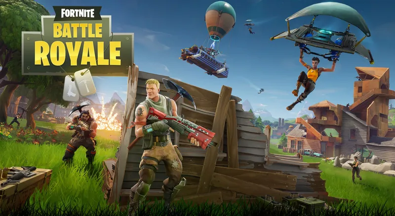
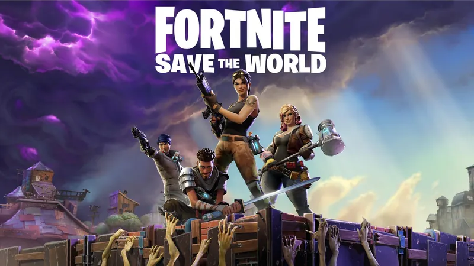
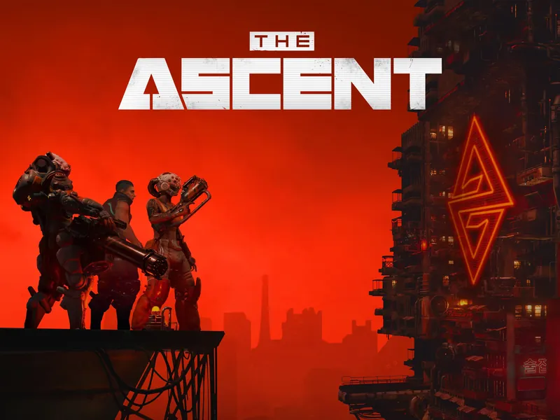
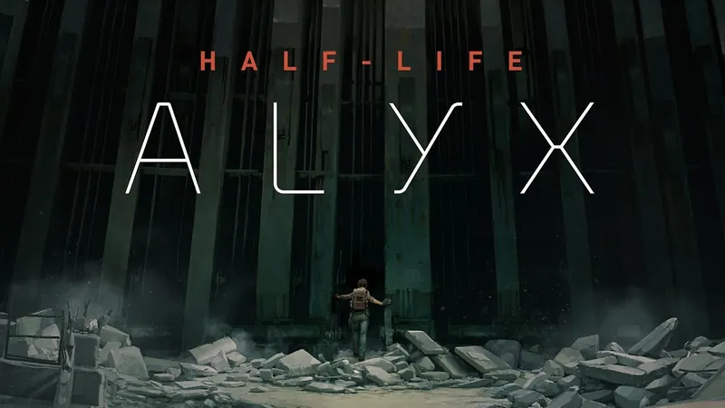
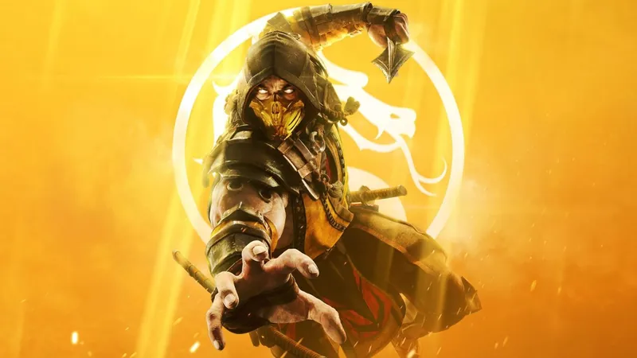
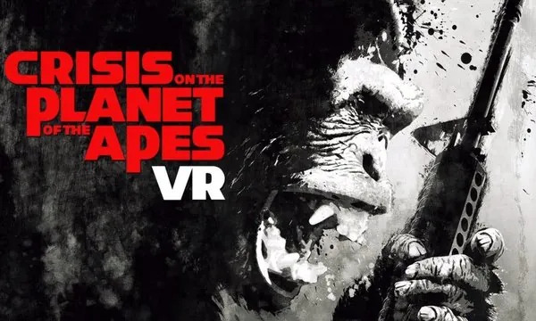
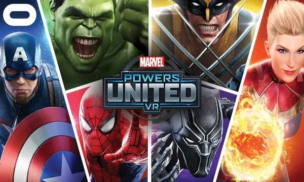
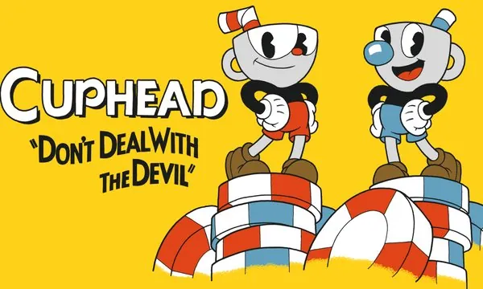
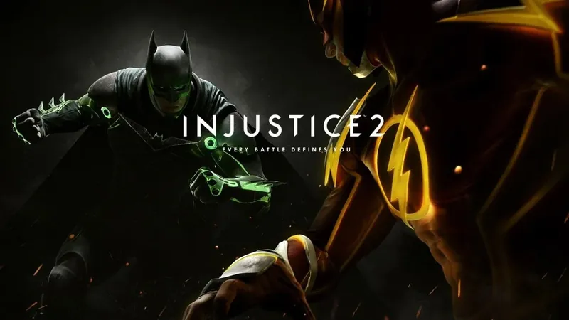
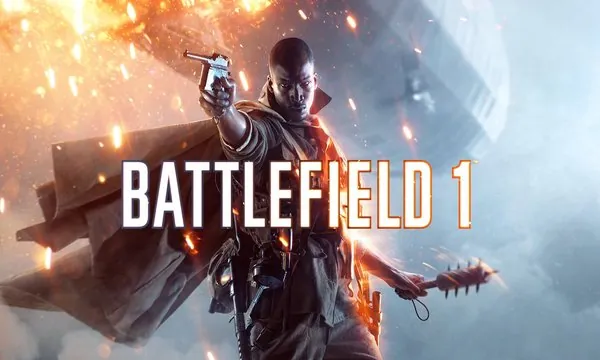
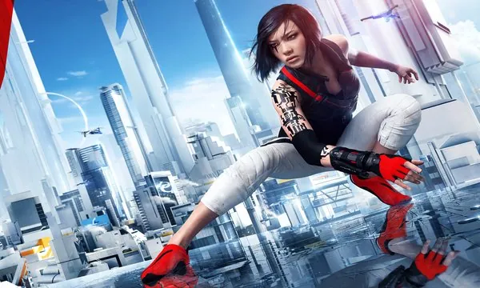
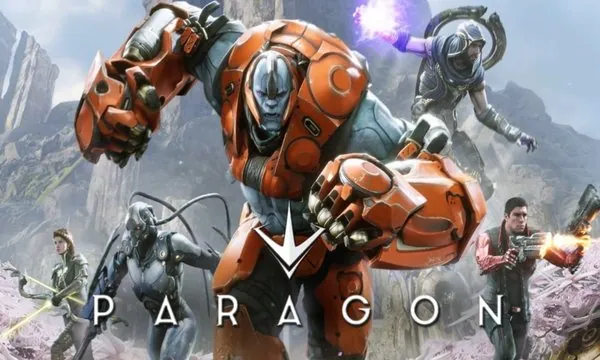
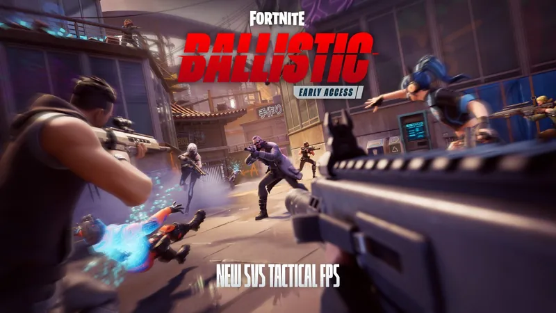
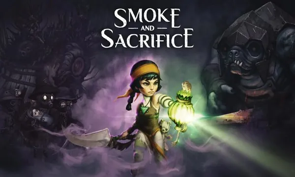
Integral Audio Solutions Ltd was founded on a single principle: that audio is the architecture of immersion. The sounds a player never consciously notices are the ones doing the most important work — building the emotional logic of a space, grounding the world, and keeping the player present.
A track record spanning multiplayer shooters, cinematic VR experiences, and fighting game spectacle means we bring senior-level technical and creative expertise to every project we take on.
We work directly with audio directors, producers, and studio leads — offering a professional, communicative, and technically rigorous partnership from brief through to final delivery.
Original sound effects from field recording and synthesis through to final delivery — built for your middleware pipeline and creative brief.
Environmental and spatial audio design for large-scale open worlds and immersive game environments — our core speciality.
Full Wwise / UE5 pipeline implementation: SoundBank generation, Blueprint AK node setup, profiling, and runtime optimisation.
Middleware architecture, asset workflow design, and pipeline consultation — for studios building or scaling their audio infrastructure.
Whether you are in pre-production, mid-development, or scaling an existing audio pipeline, we are available for project-based engagements and ongoing contracts. UK-based, working globally.
Send an Enquiry